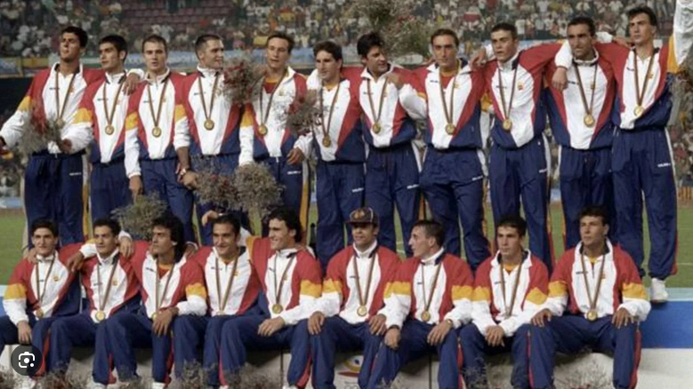

El Oro de Barcelona 92
La medalla de oro obtenida por la selección española de fútbol en los Juegos Olímpicos de Barcelona 1992 no solo supuso el primer y único título olímpico en la historia del fútbol de nuestro país, sino que transformó la mentalidad de los futbolistas nacionales, demostrando que España podía ganar en el máximo escenario mundial bajo una enorme presión.
- El Camino Perfecto: España firmó un torneo inmaculado como anfitriona, ganando los cinco partidos previos a la gran final sin encajar un solo gol en contra. Superó a Colombia, Egipto y Qatar en la fase de grupos, a Italia en cuartos de final y a Ghana en las semifinales.
- Épica en el Camp Nou: La gran final se disputó el 8 de agosto de 1992 ante 95.000 espectadores. En un partido vibrante contra Polonia, España comenzó perdiendo, logró remontar y, tras el empate polaco, el delantero Kiko Narváez desató la locura al anotar el definitivo 3-2 en el minuto 91, justo antes de la prórroga.
- La "Quinta de Cobi": El equipo estaba dirigido por Vicente Miera y conformado por una generación dorada de futbolistas sub-23 que marcarían la década de los 90. Destacaban el capitán Pep Guardiola, Luis Enrique, Alfonso Pérez, Abelardo Fernández, Santiago Cañizares, Albert Ferrer y el propio Kiko.
- Máxima Eficacia: La selección se caracterizó por una solidez defensiva impenetrable liderada por el guardameta Toni Jiménez y una pegada letal en ataque. Kiko Narváez se coronó como el máximo artillero del equipo en el torneo con 5 goles esenciales, incluidos los dos de la final.
- La Identidad: Este oro olímpico rompió para siempre el viejo "mal de cuartos" y los complejos históricos del deporte español. Convirtió la ansiedad de jugar en casa en una energía ganadora, sentando las bases competitivas de madurez y talento que heredarían las futuras generaciones del fútbol nacional.
